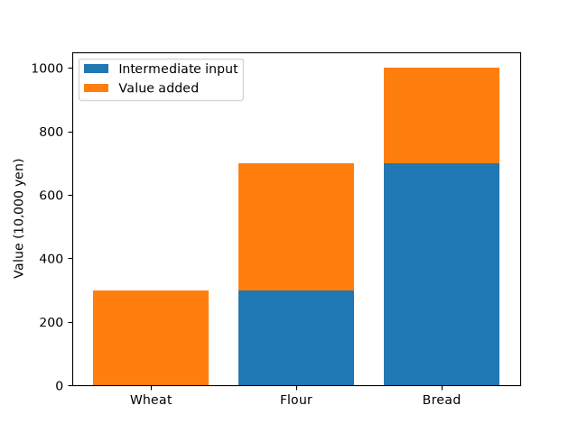
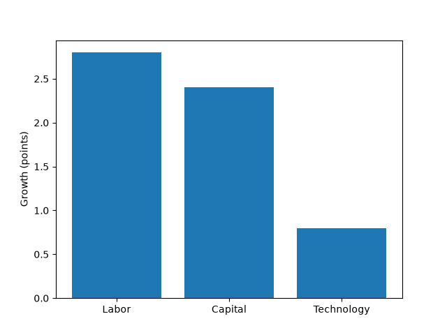

第 1 章: GDP と付加価値¶
1.1 この章の地図¶
マクロ経済学は、国全体の経済活動を、数字で測ることから始まります。その中心が、GDP（国内総生産）です。この章では、GDP を、付加価値の合計として計算し、GNI・NDP との違い、フローとストックの違い、成長率を要因に分ける成長会計を、関数とテストで確かめます。

| 項目 | 内容 |
|---|---|
| 経済学の題材 | 付加価値と GDP、GNI・NDP、帰属計算、フローとストック、成長会計 |
| 使う Python の機能 | 関数、リスト、dataclass、テスト（pytest）。NumPy・pandas は、この章では使いません |
| 新しく導入するライブラリ | Matplotlib（図。第 1 シリーズ の第 7 章で学習済み） |
| 完成形 | value_added、gdp_from_stages、gni、ndp、is_in_gdp、stock_path、GrowthAccounting、growth_accounting |
| ファイル | 実装: lib/chapter01/gdp.py、lib/chapter01/plot.py（図）／テスト: test/chapter01/test_gdp.py、test/chapter01/test_plot.py（自分で書くときは、practice/chapter01/ に、同じ名前で作ります） |
| データ | なし（手計算できる小さな例だけ） |
経済学の式とコードの対応¶
| 経済学 | 式 | コード |
|---|---|---|
| 付加価値 | 付加価値 = 生産額 − 中間投入 | value_added(output, intermediate) |
| GDP | GDP = 付加価値の合計（= 最終財の価値） | gdp_from_stages(output, intermediate) |
| GNI | GNI = GDP + 海外からの受取 − 海外への支払 | gni(gdp, income_from_abroad, income_to_abroad) |
| NDP | NDP = GDP − 固定資本減耗 | ndp(gdp, depreciation) |
| ストック | 今期のストック = 前期のストック + 今期のフロー | stock_path(initial, flows) |
| 成長会計 | 成長率 = 労働分配率 × 労働増加率 + 資本分配率 × 資本増加率 + 技術進歩率 | growth_accounting(...) |
前提とする第 1 シリーズの章¶
この記事は、Python の基礎を繰り返しません。次ができれば、読み進められます。
| できること | 第 1 シリーズの章 |
|---|---|
| 関数と pytest のテストを書く（Red → Green → Refactor） | 第 1〜6 章 |
| リスト・辞書・内包表記を使う | 第 3・4 章 |
| Matplotlib で、棒グラフを描く | 第 7 章 |
三面等価（第 2 章）や乗数（第 4 章）など、第 1 シリーズの第 9・11〜14 章と題材が重なる章があります。この記事は、独立して読めるように、自分のコードを持ちます。
1.2 準備¶
サンプルコードは、リポジトリの apps/macro-basics-programming/python/ にあります。uv のインストールは、第 1 シリーズの第 1 章 の 1.2 節を見てください。
cd apps/macro-basics-programming/python
uv sync
uv run pytest test/chapter01
20 passed
自分でコードを書くときは、practice/chapter01/ を作って、完成形と同じ名前（gdp.py・test_gdp.py）のファイルに書きます。テストは、uv run pytest practice/chapter01 で動かします。テストの import は、from lib.chapter01.gdp import ... を、from practice.chapter01.gdp import ... に書き換えてください（書き換えないと、完成形を読み込んで、最初から通ってしまい、Red になりません）。完成形（lib/ と test/）は、答え合わせ用です。 自分で書き終えてから、開いてください。import と補助関数（先頭が _ の関数）は、記事の抜粋に出ないことがあります。そのときは、完成形のファイルの先頭を見て、写してください。「予想の答え合わせ」のスクリプトは、practice/chapter01/check.py に保存し、アプリのディレクトリ（apps/macro-basics-programming/python）で uv run python practice/chapter01/check.py と実行します。
1.3 予想する¶
小麦を作る農家、小麦を買って小麦粉にする製粉業者、小麦粉を買ってパンを作るパン屋の、3 つの段階があります。1 年間の生産額（万円）と、前の段階から買った中間投入（万円）は、次のとおりです。
| 段階 | 生産額 | 中間投入 |
|---|---|---|
| 小麦（農家） | 300 | 0 |
| 小麦粉（製粉業者） | 700 | 300 |
| パン（パン屋） | 1000 | 700 |
- 各段階の付加価値は、いくつですか。3 つを足すと、いくつですか。パンの値段 1000 と比べて、どうですか
- GDP が 1000 万円のとき、日本人が海外から受け取った所得が 30、外国人に支払った所得が 20 なら、GNIは、いくつですか。固定資本減耗が 150 なら、NDPは、いくつですか
- 成長率が 6%、労働が 7% 増え（労働分配率 0.4）、資本が 4% 増えた（資本分配率 0.6）とき、技術進歩率は、いくつですか
- 資本ストックが 100 のとき、投資などのフローが、3 期続けて +10、−5、+20 でした。3 期後のストックは、いくつですか
1.4 GDP の考え方¶
付加価値¶
GDP は、一定期間に、国内で新しく生まれた付加価値の総額です。付加価値は、生産額から、前の段階で作られたもの（中間投入）を引いた値です。
付加価値 = 生産額 − 中間投入
パンの値段 1000 万円のなかには、小麦や小麦粉の値段が、すでに含まれています。各段階の生産額をそのまま足すと、同じものを、何度も数えてしまいます（二重計算）。付加価値だけを足すと、二重計算が消え、最終財の価値に一致します。
GNI と NDP¶
GDP は、国内で生まれた付加価値で、外国人や外国企業の活動も含みます。国民（その国の居住者）が受け取った所得で数えるのが、GNI（国民総所得）です。
GNI = GDP + 海外からの受取 − 海外への支払
機械や建物は、使うと古くなって、価値が減ります（固定資本減耗）。この分を、GDP から引くと、NDP（国内純生産）になります。
NDP = GDP − 固定資本減耗
帰属計算¶
市場で売買されないものも、GDP に含めるものがあります（帰属計算）。
| GDP に含める | GDP に含めない |
|---|---|
| 政府サービス、持ち家の家賃、農家の自家消費 | キャピタルゲイン、中古品の売買、家事労働 |
持ち家の家賃は、「もし借りていたら払う家賃」を、持ち主が自分に払っていると見なして、GDP に含めます。中古品の売買は、新しい付加価値を生まないので、含めません。
フローとストック¶
マクロの量は、フロー（一定期間の量）とストック（ある時点の残高）に分かれます。GDP・消費・投資は、フローです。資本ストックや貨幣供給量は、ストックです。ストックは、フローが積み重なって、変わります。
今期のストック = 前期のストック + 今期のフロー
成長会計¶
経済成長を、労働・資本・技術進歩の寄与に分けるのが、成長会計です。
成長率 = 労働分配率 × 労働増加率 + 資本分配率 × 資本増加率 + 技術進歩率
技術進歩率（全要素生産性の成長率）は、直接測れないので、成長率から、労働と資本の寄与を引いた残りとして求めます。
1.5 プログラミング¶
Red: 付加価値のテスト¶
最初のテストを書きます。3 段階の例で、付加価値は、手計算できます。
import pytest
from lib.chapter01.gdp import (
GrowthAccounting,
gdp_from_stages,
gni,
growth_accounting,
is_in_gdp,
ndp,
stock_path,
value_added,
)
OUTPUT = [300, 700, 1000]
INTERMEDIATE = [0, 300, 700]
def test_付加価値は生産額から中間投入を引いた値() -> None:
assert value_added(OUTPUT, INTERMEDIATE) == [300, 400, 300]
def test_付加価値の合計は最終財の価値に等しい() -> None:
assert gdp_from_stages(OUTPUT, INTERMEDIATE) == 1000
assert gdp_from_stages(OUTPUT, INTERMEDIATE) == OUTPUT[-1]
value_added がまだないので、テストは失敗します（Red）。
Green: 付加価値を実装する¶
def value_added(output: Sequence[float], intermediate: Sequence[float]) -> list[float]:
"""各段階の付加価値 = 生産額 − 中間投入。"""
if len(output) != len(intermediate):
raise ValueError("生産額と中間投入は、同じ長さ（段階の数）にする")
if any(i > o for o, i in zip(output, intermediate, strict=True)):
raise ValueError("中間投入が、生産額より大きい段階がある")
return [o - i for o, i in zip(output, intermediate, strict=True)]
def gdp_from_stages(output: Sequence[float], intermediate: Sequence[float]) -> float:
"""付加価値の合計。最終財の価値に等しい。"""
return sum(value_added(output, intermediate))
from lib.chapter01.gdp import gdp_from_stages, value_added
output = [300, 700, 1000]
intermediate = [0, 300, 700]
print(value_added(output, intermediate))
print(gdp_from_stages(output, intermediate))
[300, 400, 300]
1000
付加価値は [300, 400, 300] で、合計は 1000 です。パンの値段と、一致しています。
入力が、おかしいときは、エラーにします。段階の数が違うときと、中間投入が生産額より大きいとき（付加価値が負になる）です。これも、先にテストを書きます。
def test_段階の数が違えばエラー() -> None:
with pytest.raises(ValueError, match="同じ長さ"):
value_added([300, 700], [0, 300, 700])
def test_中間投入が生産額より大きいとエラー() -> None:
with pytest.raises(ValueError, match="中間投入"):
value_added([300, 700], [0, 800])
def test_中間投入が生産額に等しければ付加価値は0で有効() -> None:
assert value_added([100, 100], [0, 100]) == [100, 0]
GNI・NDP・帰属計算¶
GNI と NDP は、足し算・引き算です。帰属計算は、含めるものと、含めないものを、集合で持ちます。
def test_GNIは国内のGDPに海外からの受取を足し海外への支払を引く() -> None:
assert gni(1000, income_from_abroad=30, income_to_abroad=20) == 1010
def test_NDPはGDPから固定資本減耗を引く() -> None:
assert ndp(1000, depreciation=150) == 850
def test_帰属計算で含めるものと含めないもの() -> None:
for item in ("政府サービス", "持ち家の家賃", "農家の自家消費"):
assert is_in_gdp(item)
for item in ("キャピタルゲイン", "中古品の売買", "家事労働"):
assert not is_in_gdp(item)
def test_知らない項目はエラー() -> None:
with pytest.raises(ValueError, match="知らない項目"):
is_in_gdp("宝くじの当せん金")
_INCLUDED = {"政府サービス", "持ち家の家賃", "農家の自家消費"}
_EXCLUDED = {"キャピタルゲイン", "中古品の売買", "家事労働"}
def gni(gdp: float, income_from_abroad: float, income_to_abroad: float) -> float:
"""GNI = GDP + 海外からの受取 − 海外への支払。"""
return gdp + income_from_abroad - income_to_abroad
def ndp(gdp: float, depreciation: float) -> float:
"""NDP = GDP − 固定資本減耗。"""
return gdp - depreciation
def is_in_gdp(item: str) -> bool:
"""項目が、GDP に含まれるか。政府サービス・持ち家の家賃などは、帰属計算で含める。"""
if item in _INCLUDED:
return True
if item in _EXCLUDED:
return False
raise ValueError(f"知らない項目: {item}")
is_in_gdp は、知らない項目を、False にせず、エラーにします。「含めない」と、「知らない」は、別のことだからです。
from lib.chapter01.gdp import is_in_gdp
for item in ("持ち家の家賃", "中古品の売買"):
print(item, is_in_gdp(item))
持ち家の家賃 True
中古品の売買 False
フローとストック¶
ストックの経路は、前の期のストックに、その期のフローを足して、作ります。
def test_ストックはフローを足し上げた経路() -> None:
assert stock_path(100, [10, -5, 20]) == [100, 110, 105, 125]
def test_フローがなければストックは動かない() -> None:
assert stock_path(100, []) == [100]
def stock_path(initial: float, flows: Sequence[float]) -> list[float]:
"""ストックの経路。各期のストック = 前の期のストック + その期のフロー。"""
path = [initial]
for flow in flows:
path.append(path[-1] + flow)
return path
成長会計¶
成長会計の、技術進歩率は、残りです。手計算できる例を、先にテストにします。成長率 6%、労働増加率 7%（分配率 0.4）、資本増加率 4%（分配率 0.6）なら、労働の寄与は 0.4 × 7 = 2.8、資本の寄与は 0.6 × 4 = 2.4 なので、技術進歩率は 6 − 2.8 − 2.4 = 0.8 です。
def test_成長会計の技術進歩率は残差() -> None:
result = growth_accounting(
growth=6.0,
labor_growth=7.0,
labor_share=0.4,
capital_growth=4.0,
capital_share=0.6,
)
assert result.labor == pytest.approx(2.8)
assert result.capital == pytest.approx(2.4)
assert result.technology == pytest.approx(0.8)
def test_成長率は3つの寄与の和() -> None:
result = growth_accounting(5.0, 2.0, 0.7, 3.0, 0.3)
assert isinstance(result, GrowthAccounting)
total = result.labor + result.capital + result.technology
assert total == pytest.approx(result.growth)
def test_分配率の合計が1でなければエラー() -> None:
with pytest.raises(ValueError, match="合計が 1"):
growth_accounting(6.0, 7.0, 0.4, 4.0, 0.5)
def test_要素の増加がなければ成長はすべて技術進歩() -> None:
result = growth_accounting(3.0, 0.0, 0.5, 0.0, 0.5)
assert result.technology == pytest.approx(3.0)
@dataclass(frozen=True)
class GrowthAccounting:
"""成長会計の結果（単位は、すべて % ポイント）。"""
growth: float
labor: float
capital: float
technology: float
def growth_accounting(
growth: float,
labor_growth: float,
labor_share: float,
capital_growth: float,
capital_share: float,
) -> GrowthAccounting:
"""成長率 = 労働分配率 × 労働増加率 + 資本分配率 × 資本増加率 + 技術進歩率。
技術進歩率（全要素生産性の成長率）は、残差として求める。
"""
if abs(labor_share + capital_share - 1) > 1e-9:
raise ValueError("労働分配率と資本分配率の合計が 1 でない")
labor = labor_share * labor_growth
capital = capital_share * capital_growth
return GrowthAccounting(growth, labor, capital, growth - labor - capital)
from lib.chapter01.gdp import growth_accounting
result = growth_accounting(6.0, 7.0, 0.4, 4.0, 0.6)
print(result)
print(round(result.labor, 4), round(result.capital, 4), round(result.technology, 4))
GrowthAccounting(growth=6.0, labor=2.8000000000000003, capital=2.4, technology=0.7999999999999998)
2.8 2.4 0.8
1 行目に、浮動小数点数の誤差が見えます（2.8000000000000003、0.7999999999999998）。コンピューターは、小数を、2 進数で近似するためです。テストで、小数の値を比べるときは、== ではなく、pytest.approx を使うのは、このためです。
予想の答え合わせ¶
予想した答えを、プログラムで確かめます。
from lib.chapter01.gdp import gni, growth_accounting, ndp, stock_path, value_added
output = [300, 700, 1000]
intermediate = [0, 300, 700]
added = value_added(output, intermediate)
print("各段階の付加価値:", added)
print("付加価値の合計:", sum(added), "最終財の価値:", output[-1])
print("GNI:", gni(1000, income_from_abroad=30, income_to_abroad=20))
print("NDP:", ndp(1000, depreciation=150))
result = growth_accounting(6.0, 7.0, 0.4, 4.0, 0.6)
print("技術進歩率:", round(result.technology, 4))
print("3 期後のストック:", stock_path(100, [10, -5, 20])[-1])
各段階の付加価値: [300, 400, 300]
付加価値の合計: 1000 最終財の価値: 1000
GNI: 1010
NDP: 850
技術進歩率: 0.8
3 期後のストック: 125
- 1 つ目の問い: 付加価値は、小麦 300、小麦粉 400、パン 300 で、合計は 1000 です。パンの値段 1000 と、一致します。各段階の生産額（300 + 700 + 1000 = 2000）をそのまま足すと、2 倍になってしまいます（二重計算）
- 2 つ目の問い: GNI は 1000 + 30 − 20 = 1010、NDP は 1000 − 150 = 850 です。GNI が GDP より大きいのは、海外から受け取った所得が、支払った所得より多いからです
- 3 つ目の問い: 技術進歩率は 0.8 です。6% の成長のうち、約 13%（0.8 ÷ 6）が、労働・資本の増加で説明できない部分です
- 4 つ目の問い: 3 期後のストックは 125 です（100 + 10 − 5 + 20）。フローが負（−5）の期は、ストックが減ります
図¶
付加価値と成長会計の図を、描く関数を、テストから書きます。棒の数と高さが、手計算の値と一致することを、確かめます。
def heights(ax_patches: Iterable[Artist]) -> list[float]:
return [p.get_height() for p in ax_patches if isinstance(p, Rectangle)]
def test_付加価値の図は段階ごとに中間投入と付加価値の2本の積み上げ() -> None:
ax = plot_value_added(["Wheat", "Flour", "Bread"], OUTPUT, INTERMEDIATE).axes[0]
assert len(ax.patches) == 6
assert [t.get_text() for t in ax.get_xticklabels()] == ["Wheat", "Flour", "Bread"]
def test_積み上げた高さは生産額に等しい() -> None:
ax = plot_value_added(["Wheat", "Flour", "Bread"], OUTPUT, INTERMEDIATE).axes[0]
values = heights(ax.patches)
intermediate, added = values[:3], values[3:]
assert intermediate == pytest.approx(INTERMEDIATE)
assert added == pytest.approx([300, 400, 300])
totals = [i + a for i, a in zip(intermediate, added, strict=True)]
assert totals == pytest.approx(OUTPUT)
def test_付加価値の棒は中間投入の上に積み上がる() -> None:
ax = plot_value_added(["Wheat", "Flour", "Bread"], OUTPUT, INTERMEDIATE).axes[0]
bars = [p for p in ax.patches if isinstance(p, Rectangle)]
intermediate_bars, added_bars = bars[:3], bars[3:]
assert [b.get_y() for b in intermediate_bars] == pytest.approx([0, 0, 0])
assert [b.get_y() for b in added_bars] == pytest.approx(INTERMEDIATE)
def test_成長会計の図は3本の棒で高さは各寄与() -> None:
result = growth_accounting(6.0, 7.0, 0.4, 4.0, 0.6)
ax = plot_growth_accounting(result).axes[0]
assert [t.get_text() for t in ax.get_xticklabels()] == [
"Labor",
"Capital",
"Technology",
]
assert heights(ax.patches) == pytest.approx([2.8, 2.4, 0.8])
def test_軸の名前() -> None:
ax = plot_value_added(["A"], [1], [0]).axes[0]
assert ax.get_ylabel() == "Value (10,000 yen)"
result = growth_accounting(6.0, 7.0, 0.4, 4.0, 0.6)
assert plot_growth_accounting(result).axes[0].get_ylabel() == "Growth (points)"
def plot_value_added(
stages: Sequence[str], output: Sequence[float], intermediate: Sequence[float]
) -> Figure:
"""段階ごとの生産額を、中間投入（下）と付加価値（上）の積み上げ棒で描く。
積み上げた高さが、その段階の生産額。付加価値の部分だけを足すと、GDP になる。
"""
added = value_added(output, intermediate)
fig, ax = plt.subplots()
ax.bar(stages, intermediate, label="Intermediate input")
ax.bar(stages, added, bottom=intermediate, label="Value added")
ax.set_ylabel("Value (10,000 yen)")
ax.legend()
plt.close(fig)
return fig
def plot_growth_accounting(result: GrowthAccounting) -> Figure:
"""成長会計の、労働・資本・技術進歩の寄与（% ポイント）を、3 本の棒で描く。"""
fig, ax = plt.subplots()
ax.bar(
["Labor", "Capital", "Technology"],
[result.labor, result.capital, result.technology],
)
ax.set_ylabel("Growth (points)")
plt.close(fig)
return fig

実行結果¶
uv run pytest test/chapter01
20 passed
1.6 規則で言うと¶
- GDP は、付加価値の合計である。 生産額を足すと、二重計算になる。最終財の価値でも、付加価値の合計でも、同じ値になる
- 測れないものは、残りとして求める。 技術進歩率は、成長率から、労働と資本の寄与を引いた残り
- 小数の比較は、誤差を許す。 手計算の値と比べるときは、
pytest.approxを使う
混同しやすい点を、表にまとめます。
| 混同しやすい点 | 違い |
|---|---|
| GDP と GNI | GDP は、国内で生まれた付加価値（外国人の活動も含む）。GNI は、国民が受け取った所得（海外での所得も含む）。差は、海外からの純所得 |
| GDP と NDP | NDP は、GDP から、固定資本減耗（設備の摩耗）を引いた値 |
| フローとストック | フロー: 一定期間の量（GDP・投資）。ストック: ある時点の残高（資本ストック・貨幣量）。ストックは、フローの積み重ね |
| 含める と 市場で売買される | 持ち家の家賃や政府サービスは、市場で売買されなくても、帰属計算で含める。中古品の売買は、売買されても、含めない |
このモデルが成り立たない場面¶
- 成長会計の分配率は、仮定です。 労働分配率 0.4、資本分配率 0.6 は、この章の例の値です。実際の国で、同じとは限りません。分配率を変えると、技術進歩率が変わります（練習問題の「多様」）
- 技術進歩率は、「測定されなかったもの」の集まりです。 技術だけでなく、制度・資源配分・測定の誤差も含みます
- GDP は、豊かさそのものではありません。 家事労働や、環境の悪化は、GDP に反映されません
1.7 練習問題¶
| 種類 | 問題 |
|---|---|
| 想起 | 本文を閉じて、value_added の最初のテスト（生産額 [300, 700, 1000]、中間投入 [0, 300, 700] で、付加価値 [300, 400, 300]）を書いてください |
| 生成 | 解説を見る前に、各段階の付加価値が、GDP に占める割合を返す value_added_share(output, intermediate) を、テストから書いてください。3 段階の例では、いくつになりますか |
| 多様 | 労働分配率を 0.4 から 0.3（資本分配率 0.7）に変えると、技術進歩率は、0.8 より大きくなりますか、小さくなりますか。先に予想してから、確かめてください |
| 交互 | 第 1 シリーズの第 3・4 章のリスト内包表記で、3 か国（成長率・労働増加率・資本増加率が、A は 6・7・4、B は 3・2・3、C は 5・0・6）の成長会計を、一度に計算してください。どの国も、3 つの寄与の和が成長率になりますか |
解答（先に自分で取り組んでから、開いてください）
想起:
def test_付加価値は生産額から中間投入を引いた値() -> None:
assert value_added([300, 700, 1000], [0, 300, 700]) == [300, 400, 300]
生成: 各段階の付加価値を、合計（GDP）で割ります。3 段階の例では、[0.3, 0.4, 0.3] です。
def value_added_share(output, intermediate):
added = value_added(output, intermediate)
total = sum(added)
return [a / total for a in added]
def test_付加価値の割合の合計は1() -> None:
shares = value_added_share([300, 700, 1000], [0, 300, 700])
assert shares == pytest.approx([0.3, 0.4, 0.3])
assert sum(shares) == pytest.approx(1)
多様: 資本の増加率（4%）は、労働の増加率（7%）より小さいので、分配率を、資本に多く配ると、説明される部分（寄与）が小さくなります。残りの、技術進歩率は、大きくなると予想できます。
def test_資本分配率が大きいほど技術進歩率は大きい() -> None:
base = growth_accounting(6.0, 7.0, 0.4, 4.0, 0.6)
other = growth_accounting(6.0, 7.0, 0.3, 4.0, 0.7)
assert other.technology == pytest.approx(1.1)
assert other.technology > base.technology
6 − (0.3 × 7 + 0.7 × 4) = 6 − 4.9 = 1.1 です。分配率の仮定で、技術進歩率が、0.8 から 1.1 に変わりました。
交互:
def test_3か国の成長会計は寄与の和が成長率() -> None:
countries = {"A": (6.0, 7.0, 4.0), "B": (3.0, 2.0, 3.0), "C": (5.0, 0.0, 6.0)}
results = {
name: growth_accounting(g, gl, 0.4, gk, 0.6)
for name, (g, gl, gk) in countries.items()
}
for result in results.values():
total = result.labor + result.capital + result.technology
assert total == pytest.approx(result.growth)
assert results["B"].technology == pytest.approx(0.4)
assert results["C"].technology == pytest.approx(1.4)
技術進歩率は、A が 0.8、B が 0.4、C が 1.4 です。C は、労働が増えていない（0%）のに、5% 成長しているので、残りの技術進歩が、大きく見えます。
1.8 振り返り¶
- 付加価値の合計が、最終財の価値に一致することを、二重計算の言葉で、説明できますか
- GDP と GNI の違いは、どんな場面で大きくなりますか
- 分配率を変えると、技術進歩率が変わりました。「技術進歩率は残り」とは、どういうことですか
1.9 まとめ¶
- GDP を、付加価値の合計として計算した。3 段階の例で、合計 1000 が、最終財の価値に一致する（二重計算を避ける）
- GNI（GDP + 海外からの受取 − 海外への支払）と NDP（GDP − 固定資本減耗）、帰属計算で含めるもの・含めないものを、関数にした
- ストックを、フローの積み重ねとして計算した（100 + 10 − 5 + 20 = 125）
- 成長会計で、成長率 6% を、労働 2.8・資本 2.4・技術進歩 0.8 に分けた。技術進歩率は、残りとして求める。小数の比較には、
pytest.approxを使う - 次の章では、GDP を、生産・分配・支出の 3 つの面から計算し、一致すること（三面等価）と、産業連関表を、確かめます